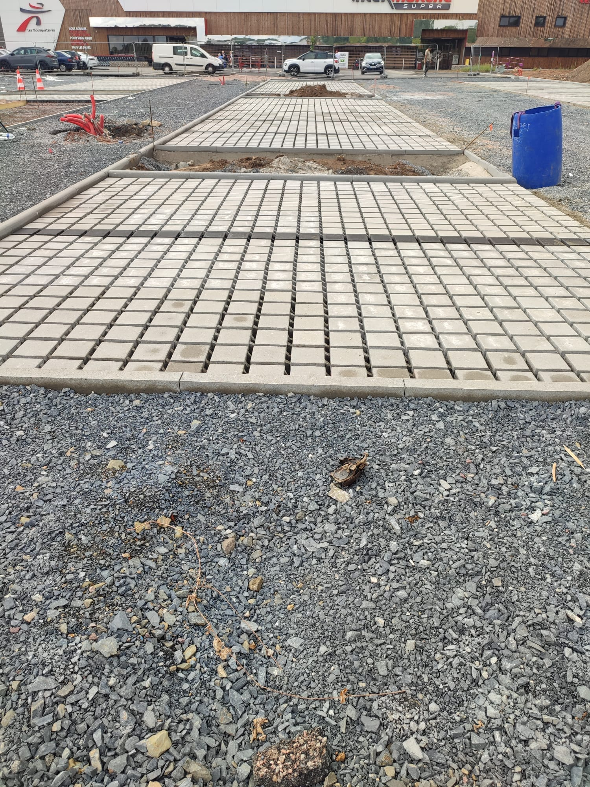
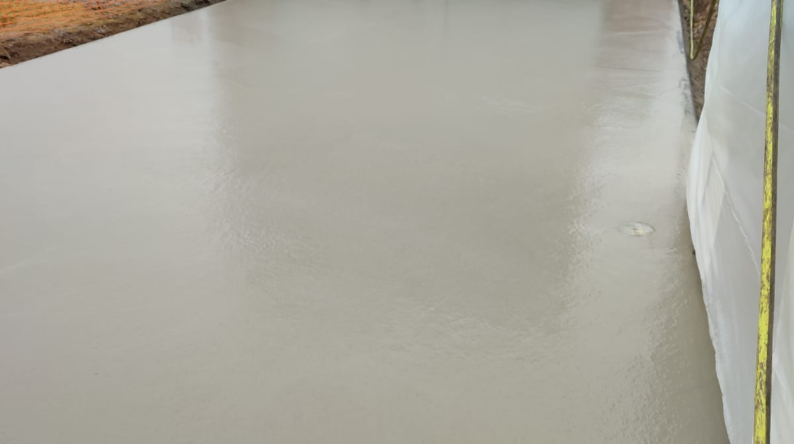
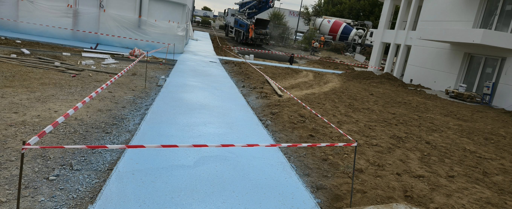
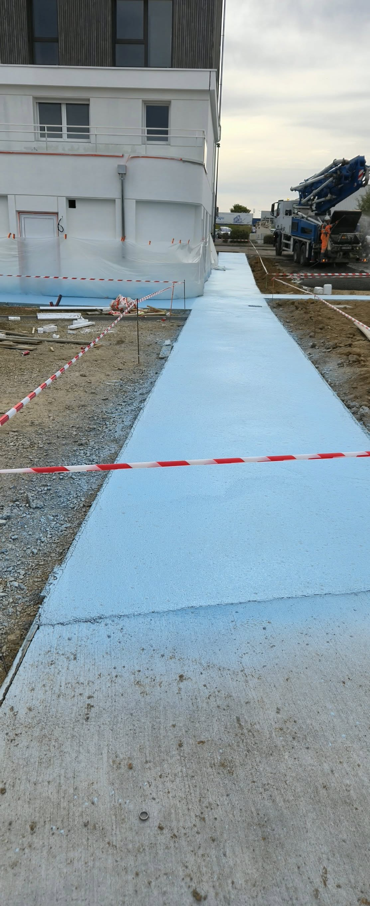

- Doğal taş görünümü sunan estetik yüzeyler
- yüzey özelliği ile güvenli zeminler
- Uzun ömürlü ve düşük bakım gerektiren yapı
- Her türlü hava koşuluna dayanıklı yüzeyler
Fırçalanmış Beton

- Dekoratif ve dayanıklı yüzey işleme
- Geleneksel taş doku görünümü
- Yüksek aşınma direnci
- Özel tasarım imkanları
Çekiçlenmiş Beton

- Ahşap, taş veya özel desen seçenekleri
- Renkli ve dokulu yüzey alternatifleri
- Estetik ve ekonomik çözüm
- Hızlı uygulama süresi
Damgalanmış Beton

- Çevre dostu su yönetimi çözümü
- Yağmur suyunun toprağa sızmasını sağlama
- Yüzey su birikmesini önleme
- Ekolojik dengeye katkı
- Kenar Bordür Montajı
- Yol ve yaya yollarında net sınırlandırma
- Estetik görünüm ve düzenli hatlar
- Trafik güvenliği için sınır belirleme
Geçirgen Beton
Döşeme Sistemleri
İç ve dış mekan için özel çözümler
- Seramik, porselen, doğal taş seçenekleri
- Modern tasarım ve fonksiyonel yapı
- Isı ve ses yalıtımı özellikli sistemler
- Montaj sonrası teknik destek
Dış Cephe Kaplamaları
- Dış Cephe Sıvası
- Isı yalıtımı sağlayan modern sıva sistemleri
- Neme ve küfe dayanıklı yapı
- Estetik ve renkli yüzey seçenekleri
- Uzun ömürlü ve düşük bakım maliyeti
Tuğla Kaplamalar
- Geleneksel görünüm, modern performans
- Isı ve ses yalıtım özellikleri
- Kolay montaj ve uzun ömür
- Doğal malzeme avantajları
- Bakım gerektirmeyen yapı
Neden Bizi Tercih Etmelisiniz?
Kalite, zamanında teslim, uygun maliyet ve teknik destek konusundaki taahhütlerimizle fark yaratıyoruz
Kalite Garantisi
- Standartlara uygun malzeme kullanımı
- Deneyimli teknik ekip
- Kalite kontrol süreçleri
Zamanında Teslim
- Proje planına sadık kalma
- Hızlı ve etkin uygulama
- Müşteri memnuniyeti odaklı çalışma
Uygun Maliyet
- Rekabetçi fiyat politikası
- Kalite-maliyet dengesi
- Uzun vadeli ekonomik çözümler
Teknik Destek
- Uygulama sonrası destek
- Bakım ve onarım hizmetleri
- 7/24 danışmanlık